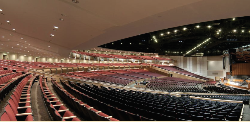
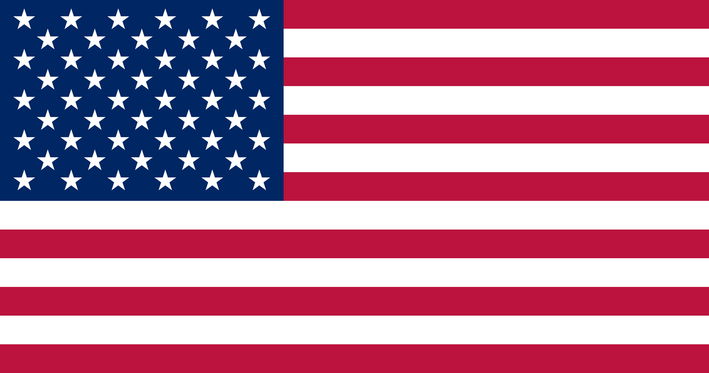
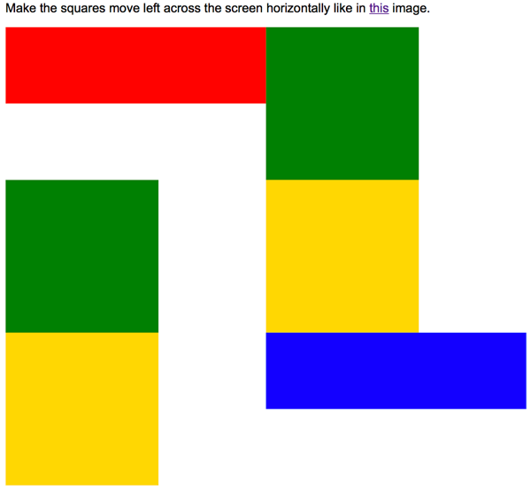
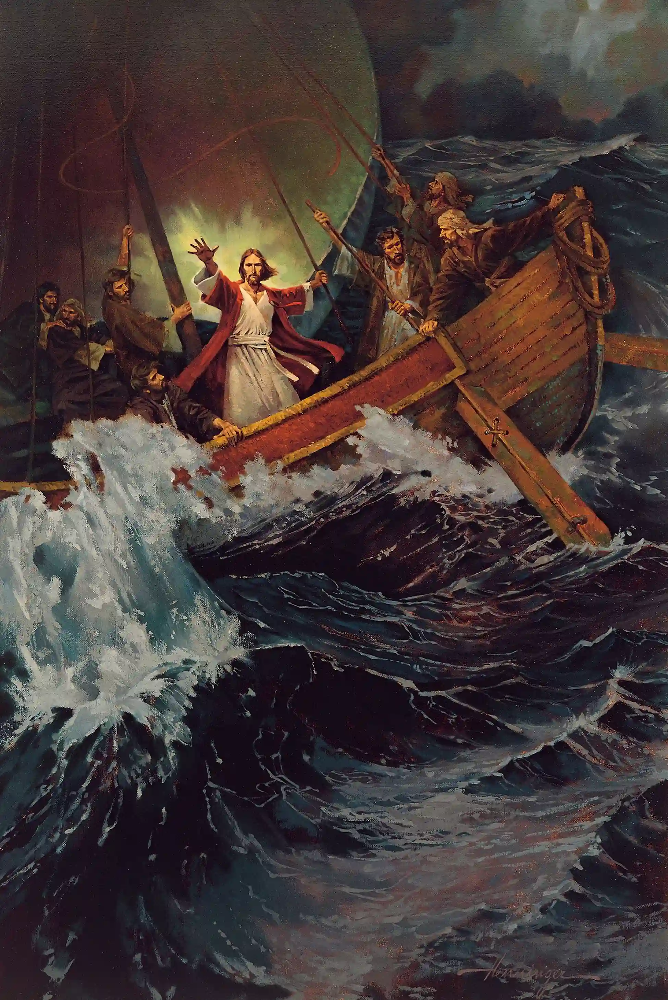

White Water Rafting Website
August 2026

This was the first project we took on in my WDD 130 (introduction to web development) class. As this project assumed that all of the students had little to no experience with HTML or CSS, it was highly guided, with a little bit of room for personalization within the branding. Although many sections of code were pre-built for me, the included explanations of why and how each piece worked was a helpful reference during my first weeks learning how these technologies work.
Photography Portfolio Example
September 2026
All credit for these amazing pictures goes to James Warner, who was my teacher for this class (Web Fundamentals). Our task for this mini-project was to try and do justice to his amazing photography and build a little showcase website to display his work. Brother Warner introduced us to both the flexbox and grid display options with this project, while leaving plenty of room for all of us to experiment with the different display options that these systems provide. Once he had shown us the basics, we were let lose to make whatever we thought would look good.
Prophet Card
September 2026

A simple project, but a fun way to work on our HTML/CSS skills in a tangentially related way to the gospel. We got to explore how to import a font, whether through a URL fetched at runtime, or a file served with the rest of the web content. Additionally, we were left free to explore different ways of centering items on the page, whether through grid, flexbox, float, or whatever other option we could manage to come up with.
Apostle Spotlight
September 2026

This project was essentially an extension of the previous Prophet Card project, but expanded to reference the entire Quorum of the Twelve Apostles. We continued experimenting with grid and flexbox, and their options for centering content both on the page, and within smaller divisions of the page. This was also a great exercise to practice with the resizing of elements, both relative to the other elements, and on the scale of the page as a whole.
Favorite Devotional Table
October 2026

As an introduction to both tables and forms, this project was one of my favorites. We took extra time to go over all of the little quirks about using and styling these elements, and even played with some new CSS sudo selectors. While my final result may not be very visually appealing, the understanding that I gained about the intricacies of forms and tables more than offsets the gaudy visual presentation..
CSS Grid Flags
October 2026

This was my absolute favorite project out of my entire Web Fundamentals class, enough that I plan to come back every now and then to challenge myself with another flag. Using no images, and just plain CSS, we got to work out how to draw flags on a web page. For some flags, this goes quite quickly, but it sometimes takes a lot of time and thought to find a solution that fully works for any given flag. This project introduced me to a plethora of new techniques, including the clip-path and polygon functions, some of the intricacies of nested grids, and element rotation.
CSS Positioning Practice
October 2026

While this was definitely on the simpler side of the projects that we've done, it was good practice to help ingrain the skills of using a HTML grid. It also introduced the officially introduced the float property, to help with the positioning of elements in weird situations, as well as being a simple way to implement text wrapping around an element.
Image Gallery Compression
November 2026

This project was a great introduction to image types, compression, and why all of that matters. The starter code for this project included all the same images that are on the page now, but they were all un-optimized, around 10mb each. After doing some type conversion, compression, and downscaling, I got the total size of all the images to be less that 1mb total. This size reduction has a huge impact on the amount of storage space and bandwidth I would need to pay for to host this website, and has the additional bonus of making the site load much faster.
Sign-Up Form Styling
November 2026

This was our final mini project for the semester, working to create a sign up form for some sort of imaginary mailing list. Most of these projects have had some sort of starting code to get us started on the design, but the starter for this project was almost blank. This provided an opportunity to imagine how I want the website to look, and convert that vision into CSS without a lot of existing structure or guidance on how to work with it.